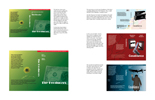
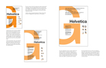
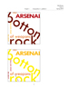

Graphic Design
Graphic Design is what I would consider to be my main focus in terms of static media. It is my official major, after all.
 This is a process book from my Sophomore year at Northeastern, in my Graphic Design 1 course. The pdf is of work accumulated throughout the semester, and shows progress and process through the projects shown. The book was designed as a French Press for binding purposes.
 This is a process book from my Sophomore year at Northeastern, in my Typography 1 course. The pdf is of work accumulated throughout the semester, and shows progress and process through the projects shown. The book was designed as a French Press for binding purposes.
 This is a process book from my Sophomore year at Northeastern, in my Color 2 Foundations course. The pdf is of all the work accumulated during the semester.
© braican.com 2010. Designed by Nicholas V. Braica
Blog powered by WordPress